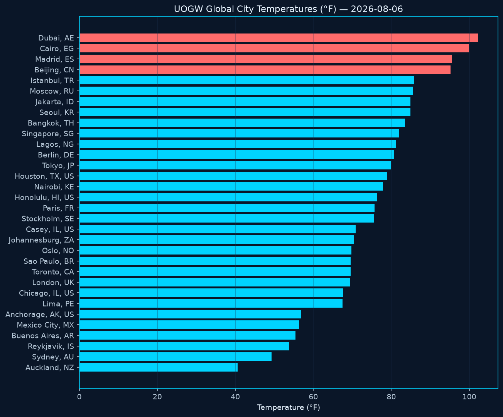
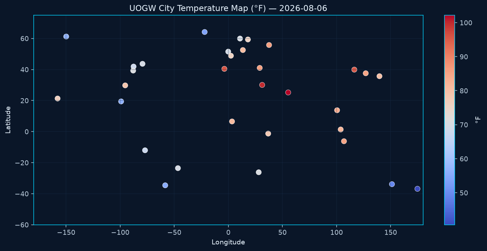
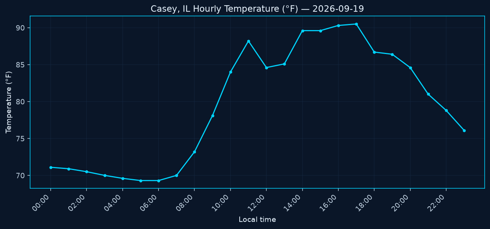
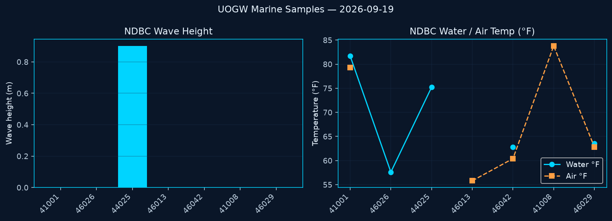
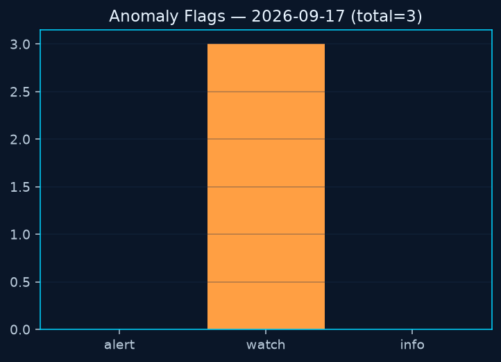
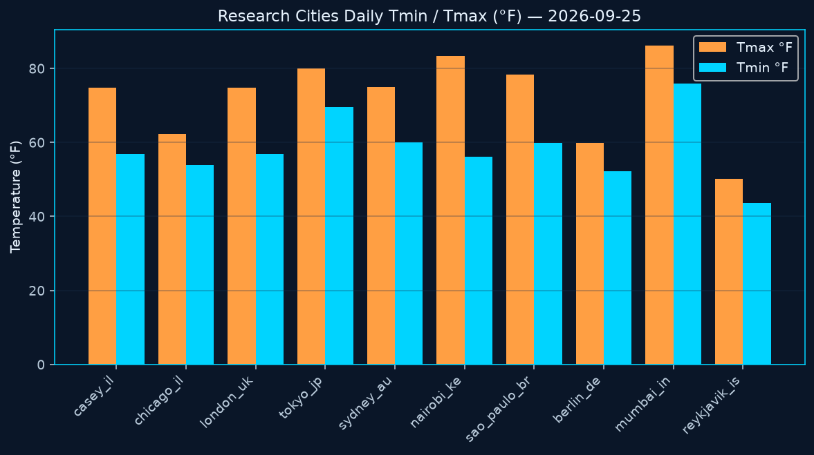
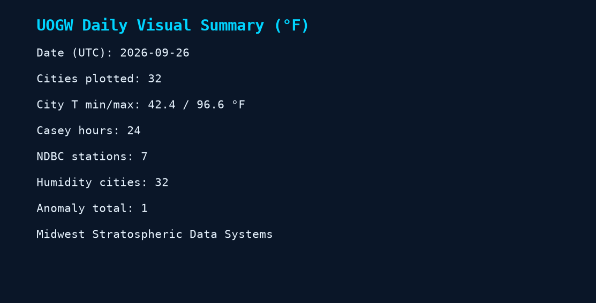

Global cities OK
—
from global-cities.json
Anomalies
—
alert / watch / info
Casey hours
—
hourly observations
NDBC samples
—
realtime stations
City temperatures (°C)
Casey hourly temperature
Anomaly severity
NDBC wave height (m)
Rendered chart images (from Actions)







If images are missing, run the Charts Daily workflow. JSON charts above still render when data files are reachable.